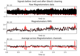
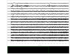

mne.preprocessing.ICA#
- class mne.preprocessing.ICA(n_components=None, *, noise_cov=None, random_state=None, method='fastica', fit_params=None, max_iter='auto', allow_ref_meg=False, verbose=None)[source]#
Data decomposition using Independent Component Analysis (ICA).
This object estimates independent components from
mne.io.Raw,mne.Epochs, ormne.Evokedobjects. Components can optionally be removed (for artifact repair) prior to signal reconstruction.Warning
ICA is sensitive to low-frequency drifts and therefore requires the data to be high-pass filtered prior to fitting. Typically, a cutoff frequency of 1 Hz is recommended.
- Parameters:
- n_components
int|float|None Number of principal components (from the pre-whitening PCA step) that are passed to the ICA algorithm during fitting:
intMust be greater than 1 and less than or equal to the number of channels.
floatbetween 0 and 1 (exclusive)Will select the smallest number of components required to explain the cumulative variance of the data greater than
n_components. Consider this hypothetical example: we have 3 components, the first explaining 70%, the second 20%, and the third the remaining 10% of the variance. Passing 0.8 here (corresponding to 80% of explained variance) would yield the first two components, explaining 90% of the variance: only by using both components the requested threshold of 80% explained variance can be exceeded. The third component, on the other hand, would be excluded.
None0.999999will be used. This is done to avoid numerical stability problems when whitening, particularly when working with rank-deficient data.
Defaults to
None. The actual number used when executing theICA.fit()method will be stored in the attributen_components_(note the trailing underscore).Changed in version 0.22: For a
float, the number of components will account for greater than the given variance level instead of less than or equal to it. The default (None) will also take into account the rank deficiency of the data.- noise_cov
None| instance ofCovariance Noise covariance used for pre-whitening. If None (default), channels are scaled to unit variance (z-standardized) as a group by channel type prior to the whitening by PCA.
- random_state
None|int| instance ofRandomState A seed for the NumPy random number generator (RNG). If
None(default), the seed will be obtained from the operating system (seeRandomStatefor details), meaning it will most likely produce different output every time this function or method is run. To achieve reproducible results, pass a value here to explicitly initialize the RNG with a defined state.- methodfastica | infomax | picard
The ICA method to use in the fit method. Use the
fit_paramsargument to set additional parameters. Specifically, if you want Extended Infomax, setmethod='infomax'andfit_params=dict(extended=True)(this also works formethod='picard'). Defaults to'fastica'. For reference, see [1][2][3][4].- fit_params
dict|None Additional parameters passed to the ICA estimator as specified by
method. Allowed entries are determined by the various algorithm implementations: seeFastICA,picard(),infomax().- max_iter
int| auto Maximum number of iterations during fit. If
'auto', it will set maximum iterations to1000for'fastica'and to500for'infomax'or'picard'. The actual number of iterations it tookICA.fit()to complete will be stored in then_iter_attribute.- allow_ref_meg
bool Allow ICA on MEG reference channels. Defaults to False.
New in version 0.18.
- verbose
bool|str|int|None Control verbosity of the logging output. If
None, use the default verbosity level. See the logging documentation andmne.verbose()for details. Should only be passed as a keyword argument.
- n_components
Notes
Changed in version 0.23: Version 0.23 introduced the
max_iter='auto'settings for maximum iterations. With version 0.24'auto'will be the new default, replacing the currentmax_iter=200.Changed in version 0.23: Warn if
Epochswere baseline-corrected.Note
If you intend to fit ICA on
Epochs, it is recommended to high-pass filter, but not baseline correct the data for good ICA performance. A warning will be emitted otherwise.A trailing
_in an attribute name signifies that the attribute was added to the object during fitting, consistent with standard scikit-learn practice.ICA
fit()in MNE proceeds in two steps:Whitening the data by means of a pre-whitening step (using
noise_covif provided, or the standard deviation of each channel type) and then principal component analysis (PCA).Passing the
n_componentslargest-variance components to the ICA algorithm to obtain the unmixing matrix (and by pseudoinversion, the mixing matrix).
ICA
apply()then:Unmixes the data with the
unmixing_matrix_.Includes ICA components based on
ica.includeandica.exclude.Re-mixes the data with
mixing_matrix_.Restores any data not passed to the ICA algorithm, i.e., the PCA components between
n_componentsandn_pca_components.
n_pca_componentsdetermines how many PCA components will be kept when reconstructing the data when callingapply(). This parameter can be used for dimensionality reduction of the data, or dealing with low-rank data (such as those with projections, or MEG data processed by SSS). It is important to remove any numerically-zero-variance components in the data, otherwise numerical instability causes problems when computing the mixing matrix. Alternatively, usingn_componentsas a float will also avoid numerical stability problems.The
n_componentsparameter determines how many components out of then_channelsPCA components the ICA algorithm will actually fit. This is not typically used for EEG data, but for MEG data, its common to usen_components < n_channels. For example, full-rank 306-channel MEG data might usen_components=40to find (and later exclude) only large, dominating artifacts in the data, but still reconstruct the data using all 306 PCA components. Settingn_pca_components=40, on the other hand, would actually reduce the rank of the reconstructed data to 40, which is typically undesirable.If you are migrating from EEGLAB and intend to reduce dimensionality via PCA, similarly to EEGLABs
runica(..., 'pca', n)functionality, passn_components=nduring initialization and thenn_pca_components=nduringapply(). The resulting reconstructed data afterapply()will have rankn.Note
Commonly used for reasons of i) computational efficiency and ii) additional noise reduction, it is a matter of current debate whether pre-ICA dimensionality reduction could decrease the reliability and stability of the ICA, at least for EEG data and especially during preprocessing [5]. (But see also [6] for a possibly confounding effect of the different whitening/sphering methods used in this paper (ZCA vs. PCA).) On the other hand, for rank-deficient data such as EEG data after average reference or interpolation, it is recommended to reduce the dimensionality (by 1 for average reference and 1 for each interpolated channel) for optimal ICA performance (see the EEGLAB wiki).
Caveat! If supplying a noise covariance, keep track of the projections available in the cov or in the raw object. For example, if you are interested in EOG or ECG artifacts, EOG and ECG projections should be temporally removed before fitting ICA, for example:
>> projs, raw.info['projs'] = raw.info['projs'], [] >> ica.fit(raw) >> raw.info['projs'] = projs
Methods currently implemented are FastICA (default), Infomax, and Picard. Standard Infomax can be quite sensitive to differences in floating point arithmetic. Extended Infomax seems to be more stable in this respect, enhancing reproducibility and stability of results; use Extended Infomax via
method='infomax', fit_params=dict(extended=True). Allowed entries infit_paramsare determined by the various algorithm implementations: seeFastICA,picard(),infomax().Note
Picard can be used to solve the same problems as FastICA, Infomax, and extended Infomax, but typically converges faster than either of those methods. To make use of Picards speed while still obtaining the same solution as with other algorithms, you need to specify
method='picard'andfit_paramsas a dictionary with the following combination of keys:dict(ortho=False, extended=False)for Infomaxdict(ortho=False, extended=True)for extended Infomaxdict(ortho=True, extended=True)for FastICA
Reducing the tolerance (set in
fit_params) speeds up estimation at the cost of consistency of the obtained results. It is difficult to directly compare tolerance levels between Infomax and Picard, but for Picard and FastICA a good rule of thumb istol_fastica == tol_picard ** 2.References
- Attributes:
- current_fitunfitted | raw | epochs
Which data type was used for the fit.
- ch_nameslist-like
Channel names resulting from initial picking.
- n_components_
int If fit, the actual number of PCA components used for ICA decomposition.
- pre_whitener_
ndarray, shape (n_channels, 1) or (n_channels, n_channels) If fit, array used to pre-whiten the data prior to PCA.
- pca_components_
ndarray, shape(n_channels, n_channels) If fit, the PCA components.
- pca_mean_
ndarray, shape (n_channels,) If fit, the mean vector used to center the data before doing the PCA.
- pca_explained_variance_
ndarray, shape(n_channels,) If fit, the variance explained by each PCA component.
- mixing_matrix_
ndarray, shape(n_components_, n_components_) If fit, the whitened mixing matrix to go back from ICA space to PCA space. It is, in combination with the
pca_components_, used byICA.apply()andICA.get_components()to re-mix/project a subset of the ICA components into the observed channel space. The former method also removes the pre-whitening (z-scaling) and the de-meaning.- unmixing_matrix_
ndarray, shape(n_components_, n_components_) If fit, the whitened matrix to go from PCA space to ICA space. Used, in combination with the
pca_components_, by the methodsICA.get_sources()andICA.apply()to unmix the observed data.- excludearray_like of
int List or np.array of sources indices to exclude when re-mixing the data in the
ICA.apply()method, i.e. artifactual ICA components. The components identified manually and by the various automatic artifact detection methods should be (manually) appended (e.g.ica.exclude.extend(eog_inds)). (There is also anexcludeparameter in theICA.apply()method.) To scrap all marked components, set this attribute to an empty list.- info
mne.Info|None The
mne.Infoobject with information about the sensors and methods of measurement.- n_samples_
int The number of samples used on fit.
- labels_
dict A dictionary of independent component indices, grouped by types of independent components. This attribute is set by some of the artifact detection functions.
- n_iter_
int If fit, the number of iterations required to complete ICA.
Methods
__contains__(ch_type)Check channel type membership.
apply(inst[,include,exclude,...])Remove selected components from the signal.
copy()Copy the ICA object.
find_bads_ecg(inst[,ch_name,threshold,...])Detect ECG related components.
find_bads_eog(inst[,ch_name,threshold,...])Detect EOG related components using correlation.
find_bads_muscle(inst[,threshold,start,...])Detect muscle related components.
find_bads_ref(inst[,ch_name,threshold,...])Detect MEG reference related components using correlation.
fit(inst[,picks,start,stop,decim,...])Run the ICA decomposition on raw data.
get_channel_types([picks,unique,only_data_chs])Get a list of channel type for each channel.
Get ICA topomap for components as numpy arrays.
get_explained_variance_ratio(inst,*[,...])Get the proportion of data variance explained by ICA components.
get_sources(inst[,add_channels,start,stop])Estimate sources given the unmixing matrix.
plot_components([picks,ch_type,inst,...])Project mixing matrix on interpolated sensor topography.
plot_overlay(inst[,exclude,picks,start,...])Overlay of raw and cleaned signals given the unmixing matrix.
plot_properties(inst[,picks,axes,dB,...])Display component properties.
plot_scores(scores[,exclude,labels,...])Plot scores related to detected components.
plot_sources(inst[,picks,start,stop,...])Plot estimated latent sources given the unmixing matrix.
save(fname,*[,overwrite,verbose])Store ICA solution into a fiff file.
score_sources(inst[,target,score_func,...])Assign score to components based on statistic or metric.
- __contains__(ch_type)[source]#
Check channel type membership.
- Parameters:
- ch_type
str Channel type to check for. Can be e.g.
'meg','eeg','stim', etc.
- ch_type
- Returns:
- in
bool Whether or not the instance contains the given channel type.
- in
Examples
Channel type membership can be tested as:
>>> 'meg' in inst True >>> 'seeg' in inst False
- apply(inst, include=None, exclude=None, n_pca_components=None, start=None, stop=None, *, on_baseline='warn', verbose=None)[source]#
Remove selected components from the signal.
Given the unmixing matrix, transform the data, zero out all excluded components, and inverse-transform the data. This procedure will reconstruct M/EEG signals from which the dynamics described by the excluded components is subtracted.
- Parameters:
- instinstance of
Raw,EpochsorEvoked The data to be processed (i.e., cleaned). It will be modified in-place.
- includearray_like of
int The indices referring to columns in the ummixing matrix. The components to be kept. If
None(default), all components will be included (minus those defined inica.excludeand theexcludeparameter, see below).- excludearray_like of
int The indices referring to columns in the ummixing matrix. The components to be zeroed out. If
None(default) or an empty list, only components fromica.excludewill be excluded. Else, the union ofexcludeandica.excludewill be excluded.- n_pca_components
int|float|None The number of PCA components to be kept, either absolute (int) or fraction of the explained variance (float). If None (default), the
ica.n_pca_componentsfrom initialization will be used in 0.22; in 0.23 all components will be used.- start
int|float|None First sample to include. If float, data will be interpreted as time in seconds. If None, data will be used from the first sample.
- stop
int|float|None Last sample to not include. If float, data will be interpreted as time in seconds. If None, data will be used to the last sample.
- on_baseline
str How to handle baseline-corrected epochs or evoked data. Can be
'raise'to raise an error,'warn'(default) to emit a warning,'ignore'to ignore, or reapply to reapply the baseline after applying ICA.New in version 1.2.
- verbose
bool|str|int|None Control verbosity of the logging output. If
None, use the default verbosity level. See the logging documentation andmne.verbose()for details. Should only be passed as a keyword argument.
- instinstance of
- Returns:
Notes
Note
Applying ICA may introduce a DC shift. If you pass baseline-corrected
EpochsorEvokeddata, the baseline period of the cleaned data may not be of zero mean anymore. If you require baseline-corrected data, apply baseline correction again after cleaning via ICA. A warning will be emitted to remind you of this fact if you pass baseline-corrected data.Changed in version 0.23: Warn if instance was baseline-corrected.
Examples using
apply:Repairing artifacts with ICARemoving muscle ICA components
Removing muscle ICA components
- property compensation_grade#
The current gradient compensation grade.
- copy()[source]#
Copy the ICA object.
- Returns:
- icainstance of
ICA The copied object.
- icainstance of
Examples using
copy:
- find_bads_ecg(inst, ch_name=None, threshold='auto', start=None, stop=None, l_freq=8, h_freq=16, method='ctps', reject_by_annotation=True, measure='zscore', verbose=None)[source]#
Detect ECG related components.
Cross-trial phase statistics [7] or Pearson correlation can be used for detection.
Note
If no ECG channel is available, routine attempts to create an artificial ECG based on cross-channel averaging.
- Parameters:
- instinstance of
Raw,EpochsorEvoked Object to compute sources from.
- ch_name
str The name of the channel to use for ECG peak detection. The argument is mandatory if the dataset contains no ECG channels.
- threshold
float| auto Value above which a feature is classified as outlier. See Notes.
Changed in version 0.21.
- start
int|float|None First sample to include. If float, data will be interpreted as time in seconds. If None, data will be used from the first sample. When working with Epochs or Evoked objects, must be float or None.
- stop
int|float|None Last sample to not include. If float, data will be interpreted as time in seconds. If None, data will be used to the last sample. When working with Epochs or Evoked objects, must be float or None.
- l_freq
float Low pass frequency.
- h_freq
float High pass frequency.
- methodctps | correlation
The method used for detection. If
'ctps', cross-trial phase statistics [7] are used to detect ECG-related components. See Notes.- reject_by_annotation
bool Whether to omit bad segments from the data before fitting. If
True(default), annotated segments whose description begins with'bad'are omitted. IfFalse, no rejection based on annotations is performed.New in version 0.14.0.
- measurezscore | correlation
Which method to use for finding outliers among the components:
'zscore'(default) is the iterative z-scoring method. This method computes the z-score of the components scores and masks the components with a z-score above threshold. This process is repeated until no supra-threshold component remains.'correlation'is an absolute raw correlation threshold ranging from 0 to 1.
New in version 0.21.
- verbose
bool|str|int|None Control verbosity of the logging output. If
None, use the default verbosity level. See the logging documentation andmne.verbose()for details. Should only be passed as a keyword argument.
- instinstance of
- Returns:
- ecg_idx
listofint The indices of ECG-related components.
- scores
np.ndarrayoffloat, shape (n_components_) If method is ctps, the normalized Kuiper index scores. If method is correlation, the correlation scores.
- ecg_idx
See also
Notes
The
threshold,method, andmeasureparameters interact in the following ways:If
method='ctps',thresholdrefers to the significance value of a Kuiper statistic, andthreshold='auto'will compute the threshold automatically based on the sampling frequency.If
method='correlation'andmeasure='correlation',thresholdrefers to the Pearson correlation value, andthreshold='auto'sets the threshold to 0.9.If
method='correlation'andmeasure='zscore',thresholdrefers to the z-score value (i.e., standard deviations) used in the iterative z-scoring method, andthreshold='auto'sets the threshold to 3.0.
References
Examples using
find_bads_ecg:Repairing artifacts with ICA
- find_bads_eog(inst, ch_name=None, threshold=3.0, start=None, stop=None, l_freq=1, h_freq=10, reject_by_annotation=True, measure='zscore', verbose=None)[source]#
Detect EOG related components using correlation.
Detection is based on Pearson correlation between the filtered data and the filtered EOG channel. Thresholding is based on adaptive z-scoring. The above threshold components will be masked and the z-score will be recomputed until no supra-threshold component remains.
- Parameters:
- instinstance of
Raw,EpochsorEvoked Object to compute sources from.
- ch_name
str The name of the channel to use for EOG peak detection. The argument is mandatory if the dataset contains no EOG channels.
- threshold
float|str Value above which a feature is classified as outlier.
If
measureis'zscore', defines the threshold on the z-score used in the iterative z-scoring method.If
measureis'correlation', defines the absolute threshold on the correlation between 0 and 1.If
'auto', defaults to 3.0 ifmeasureis'zscore'and 0.9 ifmeasureis'correlation'.
- start
int|float|None First sample to include. If float, data will be interpreted as time in seconds. If None, data will be used from the first sample.
- stop
int|float|None Last sample to not include. If float, data will be interpreted as time in seconds. If None, data will be used to the last sample.
- l_freq
float Low pass frequency.
- h_freq
float High pass frequency.
- reject_by_annotation
bool Whether to omit bad segments from the data before fitting. If
True(default), annotated segments whose description begins with'bad'are omitted. IfFalse, no rejection based on annotations is performed.New in version 0.14.0.
- measurezscore | correlation
Which method to use for finding outliers among the components:
'zscore'(default) is the iterative z-scoring method. This method computes the z-score of the components scores and masks the components with a z-score above threshold. This process is repeated until no supra-threshold component remains.'correlation'is an absolute raw correlation threshold ranging from 0 to 1.
New in version 0.21.
- verbose
bool|str|int|None Control verbosity of the logging output. If
None, use the default verbosity level. See the logging documentation andmne.verbose()for details. Should only be passed as a keyword argument.
- instinstance of
- Returns:
See also
Examples using
find_bads_eog:Repairing artifacts with ICA
- find_bads_muscle(inst, threshold=0.5, start=None, stop=None, l_freq=7, h_freq=45, sphere=None, verbose=None)[source]#
Detect muscle related components.
Detection is based on [8] which uses data from a subject who has been temporarily paralyzed [9]. The criteria are threefold: 1) Positive log-log spectral slope from 7 to 45 Hz 2) Peripheral component power (farthest away from the vertex) 3) A single focal point measured by low spatial smoothness
The threshold is relative to the slope, focal point and smoothness of a typical muscle-related ICA component. Note the high frequency of the power spectral density slope was 75 Hz in the reference but has been modified to 45 Hz as a default based on the criteria being more accurate in practice.
- Parameters:
- instinstance of
Raw,EpochsorEvoked Object to compute sources from.
- threshold
float|str Value above which a component should be marked as muscle-related, relative to a typical muscle component.
- start
int|float|None First sample to include. If float, data will be interpreted as time in seconds. If None, data will be used from the first sample.
- stop
int|float|None Last sample to not include. If float, data will be interpreted as time in seconds. If None, data will be used to the last sample.
- l_freq
float Low frequency for muscle-related power.
- h_freq
float High frequency for msucle related power.
- sphere
float| array_like | instance ofConductorModel|None| auto | eeglab The sphere parameters to use for the head outline. Can be array-like of shape (4,) to give the X/Y/Z origin and radius in meters, or a single float to give just the radius (origin assumed 0, 0, 0). Can also be an instance of a spherical
ConductorModelto use the origin and radius from that object. If'auto'the sphere is fit to digitization points. If'eeglab'the head circle is defined by EEG electrodes'Fpz','Oz','T7', and'T8'(if'Fpz'is not present, it will be approximated from the coordinates of'Oz').None(the default) is equivalent to'auto'when enough extra digitization points are available, and (0, 0, 0, 0.095) otherwise.New in version 0.20.
Changed in version 1.1: Added
'eeglab'option.- verbose
bool|str|int|None Control verbosity of the logging output. If
None, use the default verbosity level. See the logging documentation andmne.verbose()for details. Should only be passed as a keyword argument.
- instinstance of
- Returns:
See also
Notes
New in version 1.1.
Examples using
find_bads_muscle:Removing muscle ICA components
Removing muscle ICA components
- find_bads_ref(inst, ch_name=None, threshold=3.0, start=None, stop=None, l_freq=None, h_freq=None, reject_by_annotation=True, method='together', measure='zscore', verbose=None)[source]#
Detect MEG reference related components using correlation.
- Parameters:
- instinstance of
Raw,EpochsorEvoked Object to compute sources from. Should contain at least one channel i.e. component derived from MEG reference channels.
- ch_name
listofstr Which MEG reference components to use. If None, then all channels that begin with REF_ICA.
- threshold
float|str Value above which a feature is classified as outlier.
If
measureis'zscore', defines the threshold on the z-score used in the iterative z-scoring method.If
measureis'correlation', defines the absolute threshold on the correlation between 0 and 1.If
'auto', defaults to 3.0 ifmeasureis'zscore'and 0.9 ifmeasureis'correlation'.
Warning
If
methodis'together', the iterative z-score method is always used.- start
int|float|None First sample to include. If float, data will be interpreted as time in seconds. If None, data will be used from the first sample.
- stop
int|float|None Last sample to not include. If float, data will be interpreted as time in seconds. If None, data will be used to the last sample.
- l_freq
float Low pass frequency.
- h_freq
float High pass frequency.
- reject_by_annotation
bool Whether to omit bad segments from the data before fitting. If
True(default), annotated segments whose description begins with'bad'are omitted. IfFalse, no rejection based on annotations is performed.- methodtogether | separate
Method to use to identify reference channel related components. Defaults to
'together'. See notes.New in version 0.21.
- measurezscore | correlation
Which method to use for finding outliers among the components:
'zscore'(default) is the iterative z-scoring method. This method computes the z-score of the components scores and masks the components with a z-score above threshold. This process is repeated until no supra-threshold component remains.'correlation'is an absolute raw correlation threshold ranging from 0 to 1.
New in version 0.21.
- verbose
bool|str|int|None Control verbosity of the logging output. If
None, use the default verbosity level. See the logging documentation andmne.verbose()for details. Should only be passed as a keyword argument.
- instinstance of
- Returns:
See also
Notes
ICA decomposition on MEG reference channels is used to assess external magnetic noise and remove it from the MEG. Two methods are supported:
With the
'together'method, only one ICA fit is used, which encompasses both MEG and reference channels together. Components which have particularly strong weights on the reference channels may be thresholded and marked for removal.With
'separate'selected components from a separate ICA decomposition on the reference channels are used as a ground truth for identifying bad components in an ICA fit done on MEG channels only. The logic here is similar to an EOG/ECG, with reference components replacing the EOG/ECG channels. Recommended procedure is to perform ICA separately on reference channels, extract them usingget_sources(), and then append them to the inst usingadd_channels(), preferably with the prefixREF_ICAso that they can be automatically detected.With
'together', thresholding is based on adaptative z-scoring.With
'separate':If
measureis'zscore', thresholding is based on adaptative z-scoring.If
measureis'correlation', threshold defines the absolute threshold on the correlation between 0 and 1.
Validation and further documentation for this technique can be found in [10].
New in version 0.18.
References
Examples using
find_bads_ref:
- fit(inst, picks=None, start=None, stop=None, decim=None, reject=None, flat=None, tstep=2.0, reject_by_annotation=True, verbose=None)[source]#
Run the ICA decomposition on raw data.
Caveat! If supplying a noise covariance keep track of the projections available in the cov, the raw or the epochs object. For example, if you are interested in EOG or ECG artifacts, EOG and ECG projections should be temporally removed before fitting the ICA.
- Parameters:
- instinstance of
RaworEpochs The data to be decomposed.
- picks
str| array_like |slice|None Channels to include. Slices and lists of integers will be interpreted as channel indices. In lists, channel type strings (e.g.,
['meg', 'eeg']) will pick channels of those types, channel name strings (e.g.,['MEG0111', 'MEG2623']will pick the given channels. Can also be the string values all to pick all channels, or data to pick data channels. None (default) will pick good data channels (excluding reference MEG channels). Note that channels ininfo['bads']will be included if their names or indices are explicitly provided. This selection remains throughout the initialized ICA solution.- start, stop
int|float|None First and last sample to include. If float, data will be interpreted as time in seconds. If
None, data will be used from the first sample and to the last sample, respectively.Note
These parameters only have an effect if
instisRawdata.- decim
int|None Increment for selecting only each n-th sampling point. If
None, all samples betweenstartandstop(inclusive) are used.- reject, flat
dict|None Rejection parameters based on peak-to-peak amplitude (PTP) in the continuous data. Signal periods exceeding the thresholds in
rejector less than the thresholds inflatwill be removed before fitting the ICA.Note
These parameters only have an effect if
instisRawdata. ForEpochs, perform PTP rejection viadrop_bad().Valid keys are all channel types present in the data. Values must be integers or floats.
If
None, no PTP-based rejection will be performed. Example:reject = dict( grad=4000e-13, # T / m (gradiometers) mag=4e-12, # T (magnetometers) eeg=40e-6, # V (EEG channels) eog=250e-6 # V (EOG channels) ) flat = None # no rejection based on flatness
- tstep
float Length of data chunks for artifact rejection in seconds.
Note
This parameter only has an effect if
instisRawdata.- reject_by_annotation
bool Whether to omit bad segments from the data before fitting. If
True(default), annotated segments whose description begins with'bad'are omitted. IfFalse, no rejection based on annotations is performed.Has no effect if
instis not amne.io.Rawobject.New in version 0.14.0.
- verbose
bool|str|int|None Control verbosity of the logging output. If
None, use the default verbosity level. See the logging documentation andmne.verbose()for details. Should only be passed as a keyword argument.
- instinstance of
- Returns:
- selfinstance of
ICA Returns the modified instance.
- selfinstance of
Examples using
fit:Repairing artifacts with ICARemoving muscle ICA components
Removing muscle ICA components
- get_channel_types(picks=None, unique=False, only_data_chs=False)[source]#
Get a list of channel type for each channel.
- Parameters:
- picks
str| array_like |slice|None Channels to include. Slices and lists of integers will be interpreted as channel indices. In lists, channel type strings (e.g.,
['meg', 'eeg']) will pick channels of those types, channel name strings (e.g.,['MEG0111', 'MEG2623']will pick the given channels. Can also be the string values all to pick all channels, or data to pick data channels. None (default) will pick all channels. Note that channels ininfo['bads']will be included if their names or indices are explicitly provided.- unique
bool Whether to return only unique channel types. Default is
False.- only_data_chs
bool Whether to ignore non-data channels. Default is
False.
- picks
- Returns:
- channel_types
list The channel types.
- channel_types
- get_components()[source]#
Get ICA topomap for components as numpy arrays.
- Returns:
- components
array, shape (n_channels, n_components) The ICA components (maps).
- components
- get_explained_variance_ratio(inst, *, components=None, ch_type=None)[source]#
Get the proportion of data variance explained by ICA components.
- Parameters:
- inst
mne.io.BaseRaw|mne.BaseEpochs|mne.Evoked The uncleaned data.
- componentsarray_like of
int|int|None The component(s) for which to do the calculation. If more than one component is specified, explained variance will be calculated jointly across all supplied components. If
None(default), uses all available components.- ch_typemag | grad | planar1 | planar2 | eeg | array_like of
str|None The channel type(s) to include in the calculation. If
None, all available channel types will be used.
- inst
- Returns:
Notes
A value similar to EEGLABs
pvaf(percent variance accounted for) will be calculated for the specified component(s).Since ICA components cannot be assumed to be aligned orthogonally, the sum of the proportion of variance explained by all components may not be equal to 1. In certain situations, the proportion of variance explained by a component may even be negative.
New in version 1.2.
Examples using
get_explained_variance_ratio:Repairing artifacts with ICA
- get_sources(inst, add_channels=None, start=None, stop=None)[source]#
Estimate sources given the unmixing matrix.
This method will return the sources in the container format passed. Typical usecases:
pass Raw object to use
raw.plotfor ICA sourcespass Epochs object to compute trial-based statistics in ICA space
pass Evoked object to investigate time-locking in ICA space
- Parameters:
- instinstance of
Raw,EpochsorEvoked Object to compute sources from and to represent sources in.
- add_channels
None|listofstr Additional channels to be added. Useful to e.g. compare sources with some reference. Defaults to None.
- start
int|float|None First sample to include. If float, data will be interpreted as time in seconds. If None, the entire data will be used.
- stop
int|float|None Last sample to not include. If float, data will be interpreted as time in seconds. If None, the entire data will be used.
- instinstance of
- Returns:
Examples using
get_sources:
- plot_components(picks=None, ch_type=None, *, inst=None, plot_std=True, reject='auto', sensors=True, show_names=False, contours=6, outlines='head', sphere=None, image_interp='cubic', extrapolate='auto', border='mean', res=64, size=1, cmap='RdBu_r', vlim=(None, None), cnorm=None, colorbar=False, cbar_fmt='%3.2f', axes=None, title=None, nrows='auto', ncols='auto', show=True, image_args=None, psd_args=None, verbose=None)[source]#
Project mixing matrix on interpolated sensor topography.
- Parameters:
- picks
int|listofint|slice|None Indices of the independent components (ICs) to visualize. If an integer, represents the index of the IC to pick. Multiple ICs can be selected using a list of int or a slice. The indices are 0-indexed, so
picks=1will pick the second IC:ICA001.Nonewill pick all independent components in the order fitted.- ch_typemag | grad | planar1 | planar2 | eeg |
None The channel type to plot. For
'grad', the gradiometers are collected in pairs and the RMS for each pair is plotted. IfNonethe first available channel type from order shown above is used. Defaults toNone.- inst
Raw|Epochs|None To be able to see component properties after clicking on component topomap you need to pass relevant data - instances of Raw or Epochs (for example the data that ICA was trained on). This takes effect only when running matplotlib in interactive mode.
- plot_std
bool|float Whether to plot standard deviation in ERP/ERF and spectrum plots. Defaults to True, which plots one standard deviation above/below. If set to float allows to control how many standard deviations are plotted. For example 2.5 will plot 2.5 standard deviation above/below.
- rejectauto |
dict|None Allows to specify rejection parameters used to drop epochs (or segments if continuous signal is passed as inst). If None, no rejection is applied. The default is auto, which applies the rejection parameters used when fitting the ICA object.
- sensors
bool|str Whether to add markers for sensor locations. If
str, should be a valid matplotlib format string (e.g.,'r+'for red plusses, see the Notes section ofplot()). IfTrue(the default), black circles will be used.- show_names
bool|callable() If
True, show channel names next to each sensor marker. If callable, channel names will be formatted using the callable; e.g., to delete the prefix MEG from all channel names, pass the functionlambda x: x.replace('MEG ', ''). Ifmaskis notNone, only non-masked sensor names will be shown.- contours
int| array_like The number of contour lines to draw. If
0, no contours will be drawn. If a positive integer, that number of contour levels are chosen using the matplotlib tick locator (may sometimes be inaccurate, use array for accuracy). If array-like, the array values are used as the contour levels. The values should be in V for EEG, fT for magnetometers and fT/m for gradiometers. Ifcolorbar=True, the colorbar will have ticks corresponding to the contour levels. Default is6.- outlineshead |
dict|None The outlines to be drawn. If head, the default head scheme will be drawn. If dict, each key refers to a tuple of x and y positions, the values in mask_pos will serve as image mask. Alternatively, a matplotlib patch object can be passed for advanced masking options, either directly or as a function that returns patches (required for multi-axis plots). If None, nothing will be drawn. Defaults to head.
- sphere
float| array_like | instance ofConductorModel|None| auto | eeglab The sphere parameters to use for the head outline. Can be array-like of shape (4,) to give the X/Y/Z origin and radius in meters, or a single float to give just the radius (origin assumed 0, 0, 0). Can also be an instance of a spherical
ConductorModelto use the origin and radius from that object. If'auto'the sphere is fit to digitization points. If'eeglab'the head circle is defined by EEG electrodes'Fpz','Oz','T7', and'T8'(if'Fpz'is not present, it will be approximated from the coordinates of'Oz').None(the default) is equivalent to'auto'when enough extra digitization points are available, and (0, 0, 0, 0.095) otherwise.New in version 0.20.
Changed in version 1.1: Added
'eeglab'option.- image_interp
str The image interpolation to be used. Options are
'cubic'(default) to usescipy.interpolate.CloughTocher2DInterpolator,'nearest'to usescipy.spatial.Voronoior'linear'to usescipy.interpolate.LinearNDInterpolator.- extrapolate
str Options:
'box'Extrapolate to four points placed to form a square encompassing all data points, where each side of the square is three times the range of the data in the respective dimension.
'local'(default for MEG sensors)Extrapolate only to nearby points (approximately to points closer than median inter-electrode distance). This will also set the mask to be polygonal based on the convex hull of the sensors.
'head'(default for non-MEG sensors)Extrapolate out to the edges of the clipping circle. This will be on the head circle when the sensors are contained within the head circle, but it can extend beyond the head when sensors are plotted outside the head circle.
Changed in version 0.21:
The default was changed to
'local'for MEG sensors.'local'was changed to use a convex hull mask'head'was changed to extrapolate out to the clipping circle.
New in version 1.3.
- border
float| mean Value to extrapolate to on the topomap borders. If
'mean'(default), then each extrapolated point has the average value of its neighbours.New in version 0.20.
New in version 1.3.
- res
int The resolution of the topomap image (number of pixels along each side).
- size
float Side length of each subplot in inches.
New in version 1.3.
- cmapmatplotlib colormap | (colormap,
bool) | interactive |None Colormap to use. If
tuple, the first value indicates the colormap to use and the second value is a boolean defining interactivity. In interactive mode the colors are adjustable by clicking and dragging the colorbar with left and right mouse button. Left mouse button moves the scale up and down and right mouse button adjusts the range. Hitting space bar resets the range. Up and down arrows can be used to change the colormap. IfNone,'Reds'is used for data that is either all-positive or all-negative, and'RdBu_r'is used otherwise.'interactive'is equivalent to(None, True). Defaults toNone.Warning
Interactive mode works smoothly only for a small amount of topomaps. Interactive mode is disabled by default for more than 2 topomaps.
- vlim
tupleof length 2 Colormap limits to use. If a
tupleof floats, specifies the lower and upper bounds of the colormap (in that order); providingNonefor either entry will set the corresponding boundary at the min/max of the data. Defaults to(None, None).New in version 1.3.
- cnorm
matplotlib.colors.Normalize|None How to normalize the colormap. If
None, standard linear normalization is performed. If notNone,vminandvmaxwill be ignored. See Matplotlib docs for more details on colormap normalization, and the ERDs example for an example of its use.New in version 1.3.
- colorbar
bool Plot a colorbar in the rightmost column of the figure.
- cbar_fmt
str Formatting string for colorbar tick labels. See Format Specification Mini-Language for details.
- axesinstance of
Axes|listofAxes|None The axes to plot to. If
None, a newFigurewill be created with the correct number of axes. IfAxesare provided (either as a single instance or alistof axes), the number of axes provided must match the number oftimesprovided (unlesstimesisNone).Default isNone.- title
str|None The title of the generated figure. If
None(default) andaxes=None, a default title of ICA Components will be used.- nrows, ncols
int| auto The number of rows and columns of topographies to plot. If both
nrowsandncolsare'auto', will plot up to 20 components in a 54 grid, and return multiple figures if more than 20 components are requested. If one is'auto'and the other a scalar, a single figure is generated. If scalars are provided for both arguments, will plot up tonrows*ncolscomponents in a grid and return multiple figures as needed. Default isnrows='auto', ncols='auto'.New in version 1.3.
- show
bool Show the figure if
True.- image_args
dict|None Dictionary of arguments to pass to
plot_epochs_image()in interactive mode. Ignored ifinstis not supplied. IfNone, nothing is passed. Defaults toNone.- psd_args
dict|None Dictionary of arguments to pass to
compute_psd()in interactive mode. Ignored ifinstis not supplied. IfNone, nothing is passed. Defaults toNone.- verbose
bool|str|int|None Control verbosity of the logging output. If
None, use the default verbosity level. See the logging documentation andmne.verbose()for details. Should only be passed as a keyword argument.
- picks
- Returns:
- figinstance of
matplotlib.figure.Figure|listofmatplotlib.figure.Figure The figure object(s).
- figinstance of
Notes
When run in interactive mode,
plot_ica_componentsallows to reject components by clicking on their title label. The state of each component is indicated by its label color (gray: rejected; black: retained). It is also possible to open component properties by clicking on the component topomap (this option is only available when theinstargument is supplied).Examples using
plot_components:Repairing artifacts with ICA
- plot_overlay(inst, exclude=None, picks=None, start=None, stop=None, title=None, show=True, n_pca_components=None, *, on_baseline='warn', verbose=None)[source]#
Overlay of raw and cleaned signals given the unmixing matrix.
This method helps visualizing signal quality and artifact rejection.
- Parameters:
- instinstance of
RaworEvoked The signal to plot. If
Raw, the raw data is displayed before and after cleaning. In a second panel, the cross-channel average will be displayed. Since dipolar sources will be canceled out, this representation is sensitive to artifacts. IfEvoked, butterfly traces for signals before and after cleaning will be superimposed.- excludearray_like of
int|None(default) The components marked for exclusion. If
None(default), ICA.exclude will be used.- picks
str| array_like |slice|None Channels to include. Slices and lists of integers will be interpreted as channel indices. In lists, channel type strings (e.g.,
['meg', 'eeg']) will pick channels of those types, channel name strings (e.g.,['MEG0111', 'MEG2623']will pick the given channels. Can also be the string values all to pick all channels, or data to pick data channels. None (default) will pick all channels that were included during fitting.- start, stop
float|None The first and last time point (in seconds) of the data to plot. If
instis aRawobject,start=Noneandstop=Nonewill be translated intostart=0.andstop=3., respectively. ForEvoked,Nonerefers to the beginning and end of the evoked signal.- title
str|None The title of the generated figure. If
None(default), no title is displayed.- show
bool Show the figure if
True.- n_pca_components
int|float|None The number of PCA components to be kept, either absolute (int) or fraction of the explained variance (float). If None (default), the
ica.n_pca_componentsfrom initialization will be used in 0.22; in 0.23 all components will be used.New in version 0.22.
- on_baseline
str How to handle baseline-corrected epochs or evoked data. Can be
'raise'to raise an error,'warn'(default) to emit a warning,'ignore'to ignore, or reapply to reapply the baseline after applying ICA.New in version 1.2.
- verbose
bool|str|int|None Control verbosity of the logging output. If
None, use the default verbosity level. See the logging documentation andmne.verbose()for details. Should only be passed as a keyword argument.
- instinstance of
- Returns:
- figinstance of
Figure The figure.
- figinstance of
Examples using
plot_overlay:Repairing artifacts with ICARemoving muscle ICA components
Removing muscle ICA components
- plot_properties(inst, picks=None, axes=None, dB=True, plot_std=True, log_scale=False, topomap_args=None, image_args=None, psd_args=None, figsize=None, show=True, reject='auto', reject_by_annotation=True, *, verbose=None)[source]#
Display component properties.
Properties include the topography, epochs image, ERP/ERF, power spectrum, and epoch variance.
- Parameters:
- instinstance of
EpochsorRaw The data to use in plotting properties.
Note
You can interactively cycle through topographic maps for different channel types by pressing T.
- picks
int|listofint|slice|None Indices of the independent components (ICs) to visualize. If an integer, represents the index of the IC to pick. Multiple ICs can be selected using a list of int or a slice. The indices are 0-indexed, so
picks=1will pick the second IC:ICA001.Nonewill pick the first 5 components.- axes
listofAxes|None List of five matplotlib axes to use in plotting: [topomap_axis, image_axis, erp_axis, spectrum_axis, variance_axis]. If None a new figure with relevant axes is created. Defaults to None.
- dB
bool Whether to plot spectrum in dB. Defaults to True.
- plot_std
bool|float Whether to plot standard deviation/confidence intervals in ERP/ERF and spectrum plots. Defaults to True, which plots one standard deviation above/below for the spectrum. If set to float allows to control how many standard deviations are plotted for the spectrum. For example 2.5 will plot 2.5 standard deviation above/below. For the ERP/ERF, by default, plot the 95 percent parametric confidence interval is calculated. To change this, use
ciints_argsinimage_args(see below).- log_scale
bool Whether to use a logarithmic frequency axis to plot the spectrum. Defaults to
False.Note
You can interactively toggle this setting by pressing L.
New in version 1.1.
- topomap_args
dict|None Dictionary of arguments to
plot_topomap. If None, doesnt pass any additional arguments. Defaults to None.- image_args
dict|None Dictionary of arguments to
plot_epochs_image. If None, doesnt pass any additional arguments. Defaults to None.- psd_args
dict|None Dictionary of arguments to
compute_psd(). IfNone, doesnt pass any additional arguments. Defaults toNone.- figsizearray_like, shape (2,) |
None Allows to control size of the figure. If None, the figure size defaults to [7., 6.].
- show
bool Show figure if True.
- rejectauto |
dict|None Allows to specify rejection parameters used to drop epochs (or segments if continuous signal is passed as inst). If None, no rejection is applied. The default is auto, which applies the rejection parameters used when fitting the ICA object.
- reject_by_annotation
bool Whether to omit bad segments from the data before fitting. If
True(default), annotated segments whose description begins with'bad'are omitted. IfFalse, no rejection based on annotations is performed.Has no effect if
instis not amne.io.Rawobject.New in version 0.21.0.
- verbose
bool|str|int|None Control verbosity of the logging output. If
None, use the default verbosity level. See the logging documentation andmne.verbose()for details. Should only be passed as a keyword argument.
- instinstance of
- Returns:
- fig
list List of matplotlib figures.
- fig
Notes
New in version 0.13.
Examples using
plot_properties:Repairing artifacts with ICARemoving muscle ICA components
Removing muscle ICA components
- plot_scores(scores, exclude=None, labels=None, axhline=None, title='ICA component scores', figsize=None, n_cols=None, show=True)[source]#
Plot scores related to detected components.
Use this function to asses how well your score describes outlier sources and how well you were detecting them.
- Parameters:
- scoresarray_like of
float, shape (n_ica_components,) |listofarray Scores based on arbitrary metric to characterize ICA components.
- excludearray_like of
int The components marked for exclusion. If None (default), ICA.exclude will be used.
- labels
str|list| ecg | eog |None The labels to consider for the axes tests. Defaults to None. If list, should match the outer shape of
scores. If ecg or eog, thelabels_attributes will be looked up. Note that / is used internally for sublabels specifying ECG and EOG channels.- axhline
float Draw horizontal line to e.g. visualize rejection threshold.
- title
str The figure title.
- figsize
tupleofint|None The figure size. If None it gets set automatically.
- n_cols
int|None Scores are plotted in a grid. This parameter controls how many to plot side by side before starting a new row. By default, a number will be chosen to make the grid as square as possible.
- show
bool Show figure if True.
- scoresarray_like of
- Returns:
- figinstance of
Figure The figure object.
- figinstance of
Examples using
plot_scores:Repairing artifacts with ICARemoving muscle ICA components
Removing muscle ICA components
- plot_sources(inst, picks=None, start=None, stop=None, title=None, show=True, block=False, show_first_samp=False, show_scrollbars=True, time_format='float', precompute=None, use_opengl=None, *, theme=None, overview_mode=None)[source]#
Plot estimated latent sources given the unmixing matrix.
Typical usecases:
plot evolution of latent sources over time based on (Raw input)
plot latent source around event related time windows (Epochs input)
plot time-locking in ICA space (Evoked input)
- Parameters:
- instinstance of
Raw,EpochsorEvoked The object to plot the sources from.
- picks
int|listofint|slice|None Indices of the independent components (ICs) to visualize. If an integer, represents the index of the IC to pick. Multiple ICs can be selected using a list of int or a slice. The indices are 0-indexed, so
picks=1will pick the second IC:ICA001.Nonewill pick all independent components in the order fitted.- start, stop
float|int|None If
instis aRawor anEvokedobject, the first and last time point (in seconds) of the data to plot. Ifinstis aRawobject,start=Noneandstop=Nonewill be translated intostart=0.andstop=3., respectively. ForEvoked,Nonerefers to the beginning and end of the evoked signal. Ifinstis anEpochsobject, specifies the index of the first and last epoch to show.- title
str|None The window title. If None a default is provided.
- show
bool Show figure if True.
- block
bool Whether to halt program execution until the figure is closed. Useful for interactive selection of components in raw and epoch plotter. For evoked, this parameter has no effect. Defaults to False.
- show_first_samp
bool If True, show time axis relative to the
raw.first_samp.- show_scrollbars
bool Whether to show scrollbars when the plot is initialized. Can be toggled after initialization by pressing z (zen mode) while the plot window is focused. Default is
True.New in version 0.19.0.
- time_formatfloat | clock
Style of time labels on the horizontal axis. If
'float', labels will be number of seconds from the start of the recording. If'clock', labels will show clock time (hours/minutes/seconds) inferred fromraw.info['meas_date']. Default is'float'.New in version 0.24.
- precompute
bool|str Whether to load all data (not just the visible portion) into RAM and apply preprocessing (e.g., projectors) to the full data array in a separate processor thread, instead of window-by-window during scrolling. The default None uses the
MNE_BROWSER_PRECOMPUTEvariable, which defaults to'auto'.'auto'compares available RAM space to the expected size of the precomputed data, and precomputes only if enough RAM is available. This is only used with the Qt backend.New in version 0.24.
Changed in version 1.0: Support for the MNE_BROWSER_PRECOMPUTE config variable.
- use_opengl
bool|None Whether to use OpenGL when rendering the plot (requires
pyopengl). May increase performance, but effect is dependent on system CPU and graphics hardware. Only works if using the Qt backend. Default is None, which will use False unless the user configuration variableMNE_BROWSER_USE_OPENGLis set to'true', seemne.set_config().New in version 0.24.
- theme
str| path-like Can be auto, light, or dark or a path-like to a custom stylesheet. For Dark-Mode and automatic Dark-Mode-Detection,
qdarkstyleand darkdetect, respectively, are required. If None (default), the config option MNE_BROWSER_THEME will be used, defaulting to auto if its not found. Only supported by the'qt'backend.New in version 1.0.
- overview_mode
str|None Can be channels, empty, or hidden to set the overview bar mode for the
'qt'backend. If None (default), the config optionMNE_BROWSER_OVERVIEW_MODEwill be used, defaulting to channels if its not found.New in version 1.1.
- instinstance of
- Returns:
- fig
matplotlib.figure.Figure| mne_qt_browser.figure.MNEQtBrowser Browser instance.
- fig
Notes
For raw and epoch instances, it is possible to select components for exclusion by clicking on the line. The selected components are added to
ica.excludeon close.MNE-Python provides two different backends for browsing plots (i.e.,
raw.plot(),epochs.plot(), andica.plot_sources()). One is based onmatplotlib, and the other is based on PyQtGraph. You can set the backend temporarily with the context managermne.viz.use_browser_backend(), you can set it for the duration of a Python session usingmne.viz.set_browser_backend(), and you can set the default for your computer viamne.set_config('MNE_BROWSER_BACKEND', 'matplotlib')(or'qt').Note
For the PyQtGraph backend to run in IPython with
block=Falseyou must run the magic command%gui qt5first.Note
To report issues with the PyQtGraph backend, please use the issues of
mne-qt-browser.New in version 0.10.0.
Examples using
plot_sources:Repairing artifacts with ICARemoving muscle ICA components
Removing muscle ICA components
- save(fname, *, overwrite=False, verbose=None)[source]#
Store ICA solution into a fiff file.
- Parameters:
- fnamepath-like
The absolute path of the file name to save the ICA solution into. The file name should end with
-ica.fifor-ica.fif.gz.- overwrite
bool If True (default False), overwrite the destination file if it exists.
New in version 1.0.
- verbose
bool|str|int|None Control verbosity of the logging output. If
None, use the default verbosity level. See the logging documentation andmne.verbose()for details. Should only be passed as a keyword argument.
- Returns:
- icainstance of
ICA The object.
- icainstance of
See also
- score_sources(inst, target=None, score_func='pearsonr', start=None, stop=None, l_freq=None, h_freq=None, reject_by_annotation=True, verbose=None)[source]#
Assign score to components based on statistic or metric.
- Parameters:
- instinstance of
Raw,EpochsorEvoked The object to reconstruct the sources from.
- targetarray_like |
str|None Signal to which the sources shall be compared. It has to be of the same shape as the sources. If str, a routine will try to find a matching channel name. If None, a score function expecting only one input-array argument must be used, for instance, scipy.stats.skew (default).
- score_func
callable()|str Callable taking as arguments either two input arrays (e.g. Pearson correlation) or one input array (e. g. skewness) and returns a float. For convenience the most common score_funcs are available via string labels: Currently, all distance metrics from scipy.spatial and All functions from scipy.stats taking compatible input arguments are supported. These function have been modified to support iteration over the rows of a 2D array.
- start
int|float|None First sample to include. If float, data will be interpreted as time in seconds. If None, data will be used from the first sample.
- stop
int|float|None Last sample to not include. If float, data will be interpreted as time in seconds. If None, data will be used to the last sample.
- l_freq
float Low pass frequency.
- h_freq
float High pass frequency.
- reject_by_annotation
bool Whether to omit bad segments from the data before fitting. If
True(default), annotated segments whose description begins with'bad'are omitted. IfFalse, no rejection based on annotations is performed.New in version 0.14.0.
- verbose
bool|str|int|None Control verbosity of the logging output. If
None, use the default verbosity level. See the logging documentation andmne.verbose()for details. Should only be passed as a keyword argument.
- instinstance of
- Returns:
- scores
ndarray Scores for each source as returned from score_func.
- scores


Examples using mne.preprocessing.ICA#

Compare the different ICA algorithms in MNE
Removing muscle ICA components